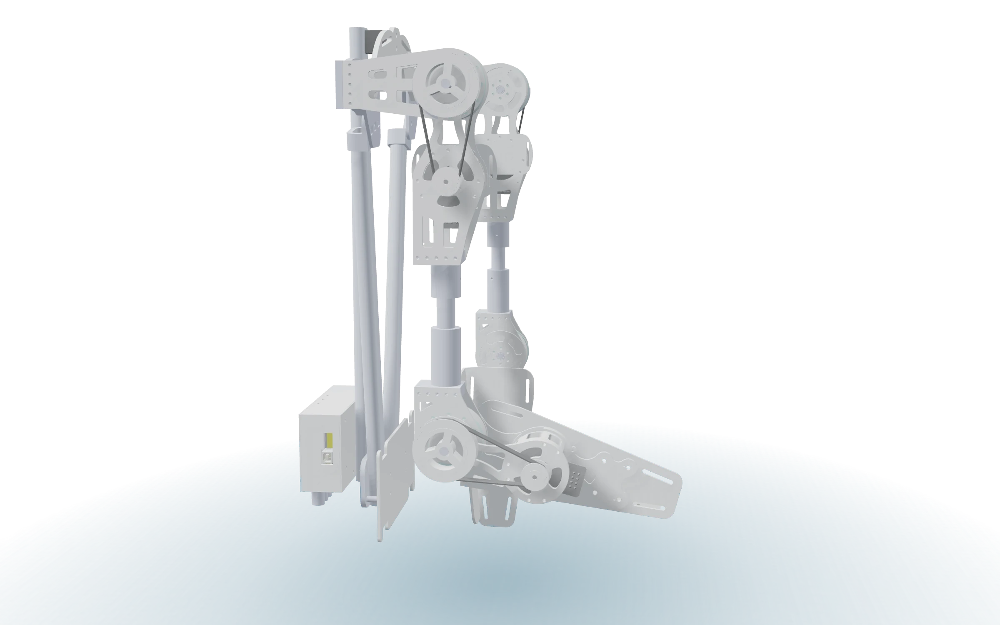
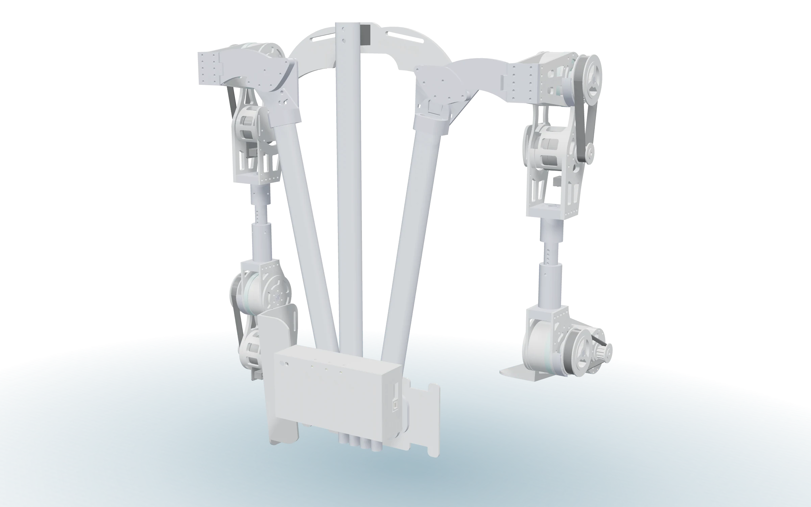
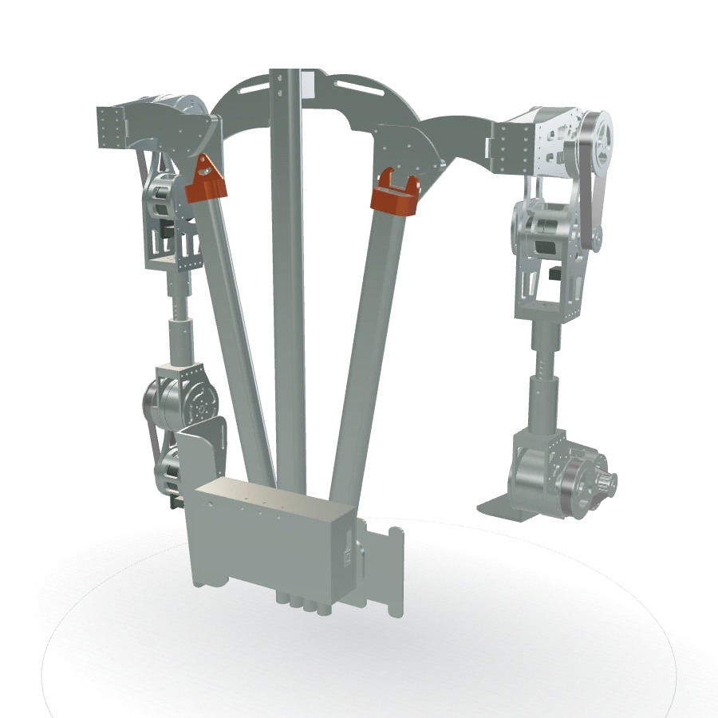
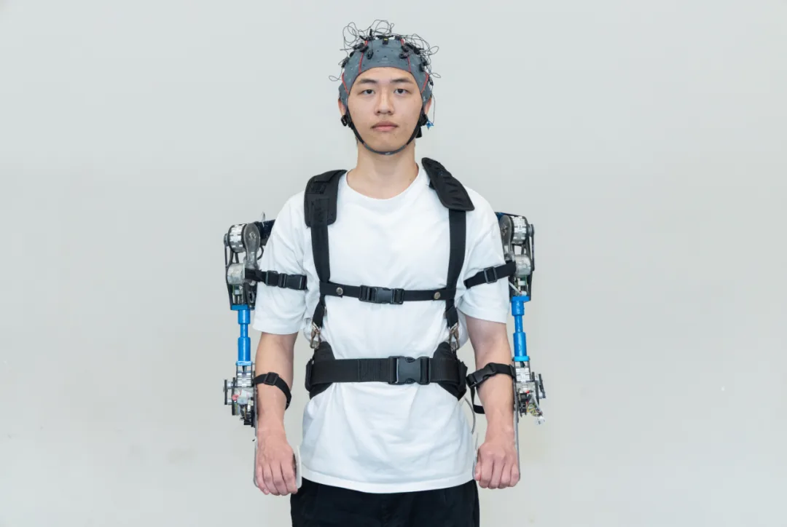
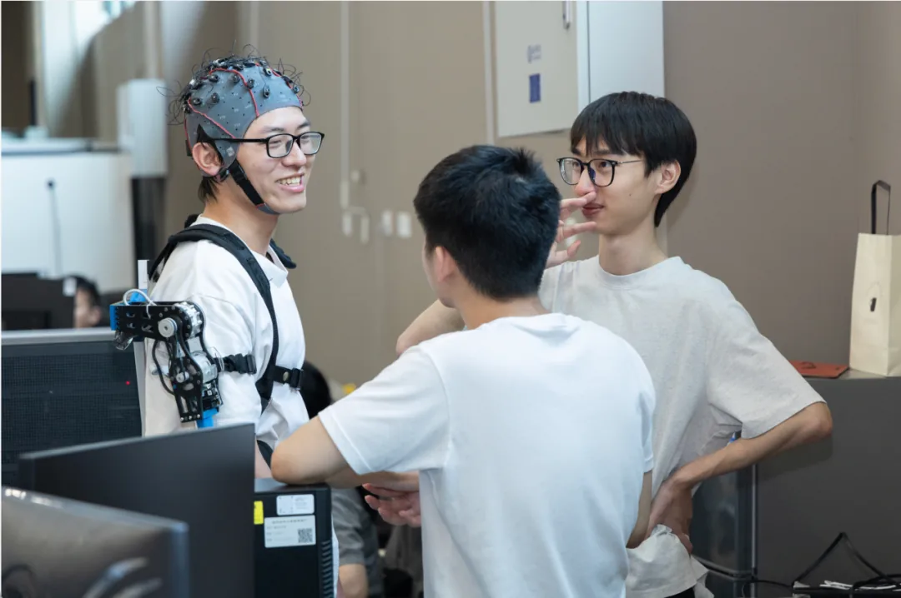
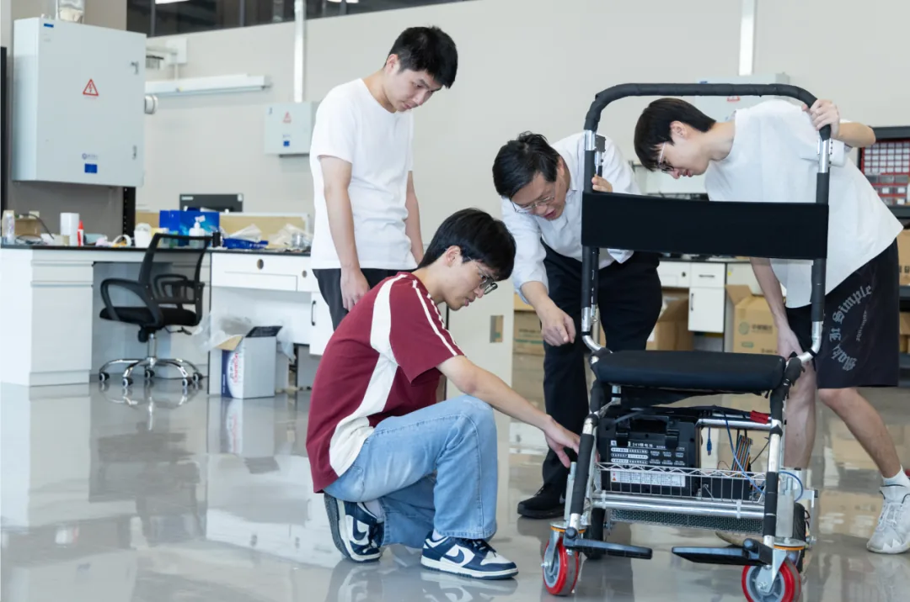

01
下肢助力外骨骼
Lower-limb assistive exoskeleton
髋、膝、踝关节的助力结构与轻量化设计。[ 研究要点待填 ]
Assistive structures and lightweight design for hip, knee and ankle joints. [ details TBC ]
让机器读懂人的动作，把力量还给身体Machines that read human motion, and return strength to the body
梁宏博教授团队，围绕下肢助力外骨骼、运动意图识别与人机协同控制开展研究，面向康复训练与工业助力场景验证样机。
Led by Prof. Liang Hongbo. We work on lower-limb assistive exoskeletons, motion-intent recognition and human-machine collaborative control, validated on prototypes for rehabilitation and industrial assistance.

用一份真实装配模型，探索机构的每一个角度。
Explore an imported assembly, from every angle.
拖动旋转 · 滚轮 / 双指缩放Drag to rotate · wheel or pinch to zoom
点击零件，查看名称Click a part to see its name

现在是用「双击打开」的方式看这一页。浏览器不许本地页面读取同一文件夹里的模型文件，所以这里先放一张静态渲染图。要交互旋转、展开结构、点选零件，请双击同目录的 启动预览.cmd：它用本地服务打开页面，三维展示才能真正载入。
This page is being previewed straight from disk. Browsers block a local page from reading a model file sitting beside it, so a still render is shown here. For interactive rotation, explode view and part picking, run 启动预览.cmd in the same folder: it serves the folder locally so the viewer can load.
模型渲染 · 肩幅调整案2 · 等真实样机照片替换
Model render · awaiting real photographs
从机械结构到控制算法，我们的研究沿着「感知人的意图」到「把助力送到关节」这条链路展开。
From mechanical structure to control algorithms, our work follows one chain: sensing human intent, then delivering assistance to the joint.
点标题进入研究内容详情页 Open the research page髋、膝、踝关节的助力结构与轻量化设计。[ 研究要点待填 ]
Assistive structures and lightweight design for hip, knee and ankle joints. [ details TBC ]
基于肌电、惯性传感与力矩信号判断穿戴者的下一步动作。[ 研究要点待填 ]
Reading the wearer's next move from EMG, inertial and torque signals. [ details TBC ]
柔顺驱动、阻抗控制与穿戴者舒适度的联合优化。[ 研究要点待填 ]
Compliant actuation, impedance control and wearer comfort optimised together. [ details TBC ]
把样机带到康复训练和长时间站立的真实场景。[ 研究要点待填 ]
Taking prototypes into rehabilitation training and long-duration standing work. [ details TBC ]
每项数字的统计口径请与课题组核对后填入。
Confirm the counting rule for each figure with the group before filling it in.
上肢与腰部两台助力样机，加脑电采集与动作捕捉。参数来自学院公开报道；未公开的字段仍然留白。
Two assistive prototypes plus EEG acquisition and motion capture. Figures come from the college’s public report; unpublished fields stay blank.
点标题进入实验硬件详情页 Open the hardware page

上肢外骨骼穿戴状态Upper-limb unit, worn
BCI 测试现场BCI test session
样机调试Bench tuning调试、试验、答辩、出访。七张图位，请用真实照片替换。
Bench work, trials, reviews, visits. Seven slots, to be replaced with real photos.
点标题进入活动相册详情页 Open the gallery page[ 一句话说明 ]
[ one-line note ]
[ 一句话说明 ]
[ one-line note ]
[ 一句话说明 ]
[ one-line note ]
[ 一句话说明 ]
[ one-line note ]
指导老师与成员名单，等待实验室提供肖像、职务与研究方向。
Advisor and members, waiting for portraits, roles and research directions.
梁宏博 Liang Hongbo
指导老师
Advisor
[ 成员姓名待填 ][ member name to be filled ]
[ 角色待填 ][ role to be filled ]
[ 成员姓名待填 ][ member name to be filled ]
[ 角色待填 ][ role to be filled ]
[ 成员姓名待填 ][ member name to be filled ]
[ 角色待填 ][ role to be filled ]
[ 成员姓名待填 ][ member name to be filled ]
[ 角色待填 ][ role to be filled ]
横向滚动查看全部成员。
Scroll the strip sideways for more members.
本科生进组、研究生报考、合作洽谈，用下面任一方式联系，说明来意和可投入的时间即可。
For undergrad research, graduate applications or collaboration, use any channel below and tell us what you want to work on.
点标题进入联系方式详情页 Open the contact page把实验室的微信二维码或咨询群二维码图片放到这里。
Drop the lab's WeChat QR code or group code into this slot.